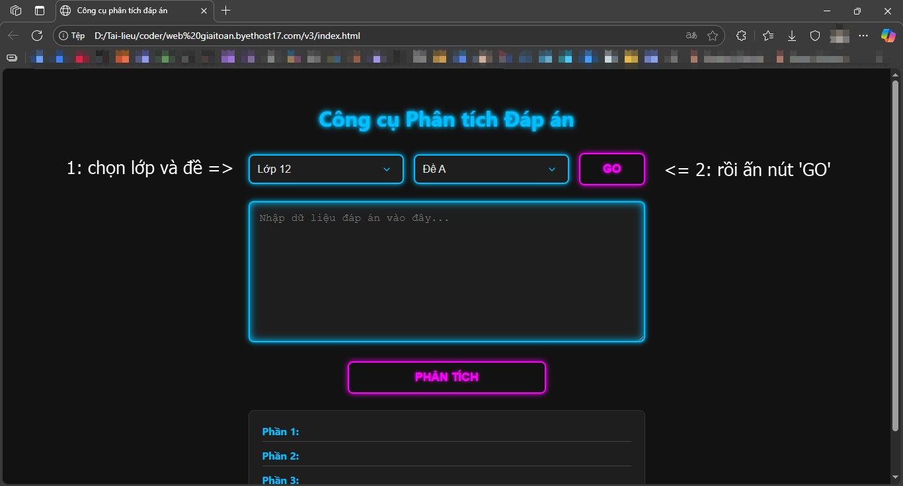
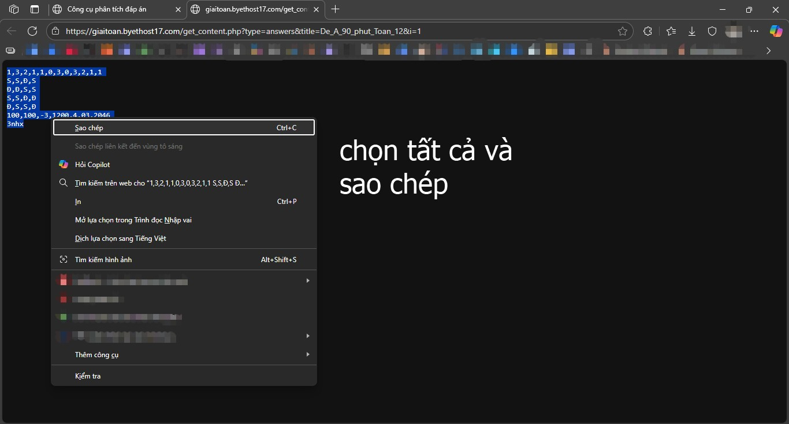
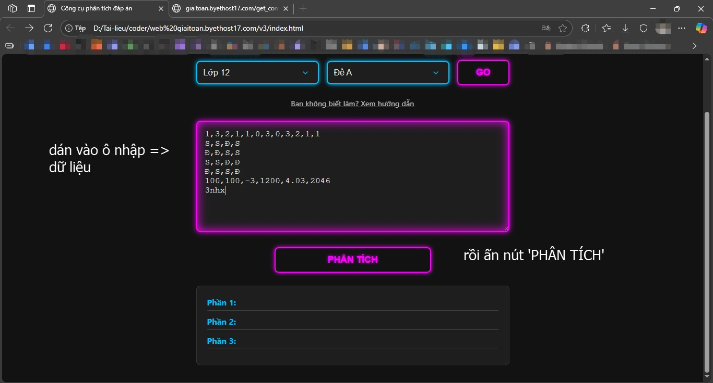
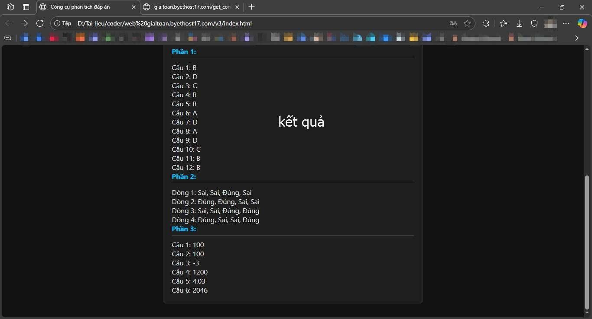

Hướng dẫn sử dụng công cụ phân tích đáp án:
Bước 1: Chọn lớp và đề thi tương ứng và ấn nút 'GO'.
Bước 2: Sau khi chuyển sang trang dữ liệu, sao chép tất cả dữ liệu đáp án.
Bước 3: Quay lại trang công cụ phân tích đáp án, dán dữ liệu vào ô trống và ấn nút 'Phân tích'.
Bước 4: Xem kết quả phân tích ở dưới ô nhập liệu.
